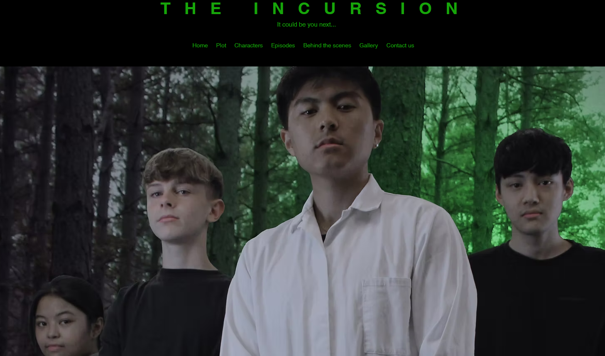

Computational creativity
Developed an interactive image-to-shape converter using HTML, CSS, JavaScript, and P5.js. The tool transforms images into customizable patterns of squares, circles, or triangles, with user controls for color, shape, randomness, and variation—encouraging creative visual experimentation.
Technologies: Html, Css, Javascript, P5.Js
Features: Custom shape selection, color matching, randomness toggle, and adjustable visual generation.

Mobile App Development
Developed a mobile app for my dissertation using React and Firebase, aimed at streamlining business processes for sports clubs. Features include class bookings, personal training schedules, fitness plans, and meal tracking.
Technologies: React, Firebase
Features: Cross-platform support, real-time database integration, secure login.

Software development
Developed a full-stack doctor’s appointment booking system with database integration. My main contributions included implementing the delete booking, change booking, and prescriptions features, ensuring smooth user interaction with real-time database updates. Also collaborated on other core functionalities across the application as part of a team assignment.
Technologies: Java, SQL
Features: Multiplayer, levels, custom UI design.
Unity 3D Video Game Development
Collaborated in a team of two to develop a 3D wave-based survival shooter in Unity, inspired by Call of Duty Zombies. Implemented core gameplay systems including enemy spawning, player health, and weapon mechanics. Strengthened skills in C#, game physics, and level design through hands-on development and teamwork.
Technologies: Unity, C#
Features: Multiplayer, levels, custom UI design.
Unity 2D Video Game Development
Developed 2D using Unity, enhancing my skills in game design and development with physics-based gameplay.
Technologies: Unity, C#
Features: Multiplayer, levels, custom UI design.

No code Website creation
This is a website I made for my media project where we had to create a show idea and a website for it to be advertised. I took all photos and edited them all together to get my desired result as well as all information being my own.
Technologies: Wix, photoshop
Features: Responsive design, smooth scrolling, fade-in animations.

Personal Portfolio Website
This is a personal portfolio developed using HTML, CSS, and JavaScript to demonstrate my skills in web development and design.
Technologies: HTML, CSS, JavaScript
Features: Responsive design, smooth scrolling, fade-in animations.

Personal Portfolio Website
This is a personal portfolio developed using HTML, CSS, and JavaScript to demonstrate my skills in web development and design.
Technologies: HTML, CSS, JavaScript
Features: Responsive design, smooth scrolling, fade-in animations.
Personal Portfolio Website
This is a personal portfolio developed using HTML, CSS, and JavaScript to demonstrate my skills in web development and design.
Technologies: HTML, CSS, JavaScript
Features: Responsive design, smooth scrolling, fade-in animations.
Personal Portfolio Website
This is a personal portfolio developed using HTML, CSS, and JavaScript to demonstrate my skills in web development and design.
Technologies: HTML, CSS, JavaScript
Features: Responsive design, smooth scrolling, fade-in animations.